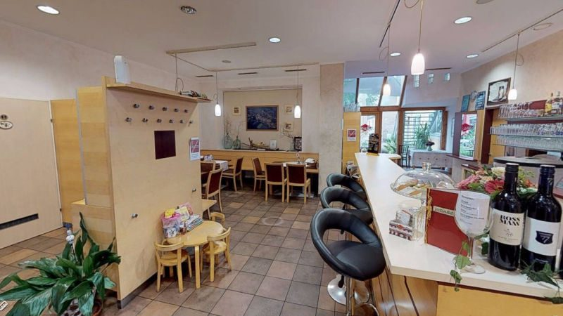

01 Speisekarte
Ein Ausschnitt aus dem, was immer geht.
Traditionell, hausgemacht, dazu Burger, Steak und vegetarische Gerichte. Die Tageskarte wechselt täglich mit Bezug auf saisonale Produkte.
„Aus der Region für die Region“ – für eine sinnvolle, traditionelle, regionale Wertschöpfung, frisch und in bester Qualität, ohne lange Transportwege. Mitglied beim AMA-Gastrosiegel.
Die vollständige Karte mit allen Preisen liegt im Haus auf; Tagesgerichte und Preise nennen wir Ihnen gerne telefonisch unter +43 3472 2109.
02 Tageskarte
Täglich neu – künftig auch hier.
Unsere Tageskarte ändert sich täglich mit Bezug auf saisonale Produkte. Bisher steht sie ausschließlich auf unserer Facebookseite; auf der neuen Website bekommt sie einen festen Platz – und wer möchte, bekommt sie montags per E-Mail.
Bis dahin: Tagesmenü und Veranstaltungen auf Facebook.

03 Dazu
Platz für die ganze Runde.
Reise- und Busgruppen sind willkommen – wir bitten um Voranmeldung und stellen auf Wunsch eine eigene Buskarte zusammen. Für Feiern gibt es Stüberl, Keller und Gastgarten.